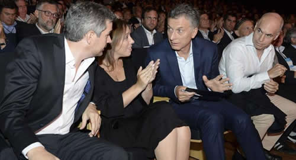

Real Chubut - Agencia de Noticias


Macri apura anuncio para jugar “fuerte” en todos los frentes

En la residencia de Olivos las horas se hacen densas, espesas, como los relojes de Dalí el tiempo se hace relativo pero la urgencia no puede esperar. A sabiendas de eso, Mauricio Macri apura un "fuerte" anuncio para salir airoso de las horas más complejas y para esopasó buena parte de este sábado con su mesa "chiquitita", esa que lo acompaña incondicional y a la que tanto le debe.
Para enfrentar sus horas más infaustas desde que asumió el 10 de diciembre, Macri eligió iniciar el sábado en compañía de Marcos Peña, María Eugenia Vidal y Horario Rodríguez Larreta. Los cuatro analizaron el escenario económico, social y político. La certeza que compartieron es el "rumbo". El horizonte les aparece claro, hay que pasar la "tormenta" para llegar a destino.
De sus tiempos de jefe de Gobierno Macri extraña el contacto cotidiano con los vecinos, es por eso que se recuesta en la gobernadora de la provincia de Buenos Aires y en el actual jefe de Gobierno porteño, para no perder la sensibilidad de lo que pasa en la "calle". La disparada del dólar, que tras superar el jueves los $ 40, cedió este viernes para cotizar a $ 37,98, despertó las peores pesadillas de los argentinos, y en la Casa Rosada entienden la psicosis pero confían en el mediano y largo plazo.
El cónclave de Olivos comenzó a delinear las medidas que confían marquen un punto de inflexión que represente la recuperación paulatina de la confianza de los mercados y de la gente en el rumbo económico. Apurar los desembolsos de fondos del FMI implica que el Gobierno debe también recortar aún más la ambiciosa meta fiscal del 1,3% del PBI prevista para 2019.
Para eso, alrededor de las 17 se sumaron al encuentro el ministro del Interior, Rogelio Frigerio, y presidente de la Cámara de Diputados, Eugenio Monzó, un dúo que conforma el ala más política del Gobierno, y que tienen como misión la negociación con los gobernadores y con los legisladores, para congeniar los muchas veces antagónicos intereses de la Nación y las provincias. A la mesa "ampliada" se sumaron también por la tarde el ministro de Economía, Nicolás Dujovne, el presidente del Banco Central, Nicolás "Toto" Caputo, y el titular de la cartera de Producción, Dante Sica.
Hay varias aristas que se unen detrás de la necesidad de achicar el gasto. Contrariamente a la constante declamación de Cambiemos de tener un Estado pequeño pero eficiente, la actual estructura de la Administración Pública Nacional posee 20 ministerios, con las subsiguientes secretarías, subscretarías y áreas de coordinación.
Al respecto hubo coincidencia entre los presentes sobre la necesidad de reformular las estructuras ministeriales, sin resentir las funciones. Esta medida tiene un aspecto económico con la reducción de carteras, pero también un fuerte contenido simbólico en el sentido que siempre declamó Macri sobre acotar el histórico Estado elefantiásico que el país supo tener durante buena parte de su historia moderna. Entonces, el lápiz debe delinear un ajuste de organigrama ministerial, sin que la desaparición de un Ministerio (para unirlo a otro o bien para pasar a rango de Secretaría) suponga la eliminación de sus funciones. Uno de los ministerios que hace tiempo suena para reabsorberse es el de Comunicaciones que conduce Oscar Aguad; habrá que ver si mientras el cuádruple play aún está en disputa el Gobierno igual opta por bajarle el rango.
Otro de los aspectos que apuntan a morigerar el déficit fiscal (eje de todos los desequilibrios, en la visión de Mauricio Macri y equipo) es el ajuste del gasto público. En mayo, cuando el dólar pegó el primer salto devaluatorio del peso, fue el propio Presidente quien dejó atrás el "gradualismo" para apurar el achique de las erogaciones. A partir de esa decisión Dujovne fue el encargado de conminar a sus pares del Gabinete a afinar los números de sus ministerios.
"El Presupuesto está avanzando, con eso venimos bien", reconoció una fuente oficial. Es que buena parte del ajuste y de las metas que comprometerá Macri con el FMI deberán quedar plasmadas en la Ley de Leyes. Frigerio es quien comanda las negociaciones con los gobernadores, buscando los consensos para plasmar en un Presupuesto que esperan termine siendo realista y cumplible.
Convencido de que las retenciones desalientan la producción, el Gobierno pone la lupa en algunos ítem que al recortarlos no impacten en la ya recesiva actividad económica.La tasa del 60%, marcada por las urgencias del Banco Central en contener la escalada del tipo de cambio, hace inviable el financiamiento para la producción. En la Casa Rosada lo saben, pero también reconocen que aún no están dadas las condiciones para bajarla.
Este domingo, seguirá el trajinar de la residencia de Olivos a donde llegarán gobernadores y legisladores de Cambiemos, a quienes se les comunicarán y explicarán las medidas. La intención del Gobierno es alcanzar el mayor consentimiento posible y por eso están abiertos a las opiniones de sus propias huestes. Es que Macri confía en sus laderos, pero mira con desconfianza a una oposición compuesta en muchos casos por dirigentes "irresponsables" que dicen lo que la gente quiere escuchar y ofrecen recetas "mágicas", las mismas que el Presidente desechó públicamente.
"El lunes hay que salir a la cancha con un anuncio fuerte", dicen en la Rosada, quedan poco más de 24 horas para terminar de cerrar un mensaje que seguramente será comunicado por un ministro, pero del que dependerá en buena medida el futuro político de Cambiemos.
Fuente: Ambito